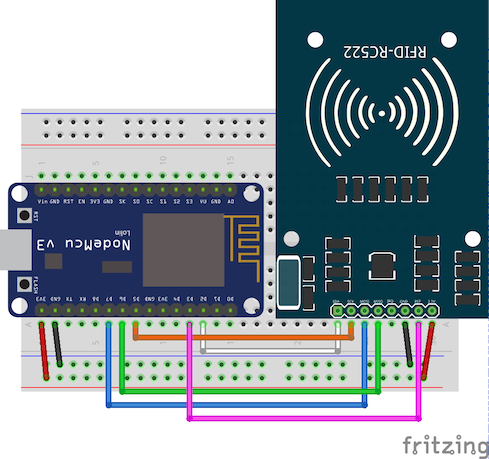

Implementasi Program RFID
Tujuan
- Mampu memahami cara kerja sensor RFID
- Mampu membuat program untuk membaca TAG ID kartu RFID
- Mampu membuat program untuk mendeteksi apakah kartu RFID telah teregister atau tidak
- Mampu membuat program untuk menampilkan keterangan “REGISTER” atau “NOT REGISTER” pada layar LCD serta menginstruksikan LED nyala atau mati ketika kartu RFID terdeteksi
Capaian
- Menjelaskan cara kerja kartu RFID dan frekensinya
- Membaca TAG ID kartu RFID
- Menghidupkan LED jika TAG RFID terdaftar dalam program
- Menampilkan keterangan “Kartu Ter-register” dan “Kartu ditolak” untuk setiap kartu yang dibaca
Teori Singkat
RFID kepanjangan dari Radio Frequency Identification merupakan sebuah teknologi nirkabel untuk mengirimkan data melalui gelombang radio. Dengan menggunakan RFID kita dapat melacak sebuah objek secara otomatis tanpa bersentuhan langsung dengan objek tersebut, RFID memiliki jangkauan baca antara beberapa Cm sampai dengan lebih dari 20 meter tergantung dari jenis RFID.
Tipe RFID
RFID terdapat beberapa jenis sesuai dengan Electronic Spectrum pada gambar di bawah ini
Warna orange menandakan frekuensi yang digunakan oleh aplikasi RFID
- Low Frequency
Bekerja secara umum pada range 30 - 300 KHz biasanya digunakan di frekuensi 125 - 134 KHz. Untuk jarak bacanya adalah kontak atau bersentuhan sampai dengan 10cm
High Frequency
Digunakan pada frekuensi 13.56 KHz. Untuk jarak bacanya adalah hampir tidak bersentuhan sampai dengan 30cm
Ultra High Frequency
Bekerja pada frekuensi 300 - 3000 KHz.
Cara Kerja RFID
Agar RFID bisa berjalan dan digunakan dibutuhkan beberapa perangkat yang ditunjukkan pada gambar di bawah ini
- Readers adalah perangkat yang digunakan untuk melakukan pembacaan tag RFID, berfungsi sebagai penerima dan mengirimkan gelombang radio untuk berkomunikasi dengan tag RFID.
- Antena sebuah komponen yang terdapat di dalam sebuah tag RFID, biasanya berbentuk lilitan tembaga.
- Tag terdiri dari antena untuk mengirimkan dan menerima sinyal dan chip RFID untuk menyimpan informasi.
RFID dapat digunakan pada public transportation, membership, id card, dan berbagai sektor lainnya.
Praktikum 1
Pada praktikum kali ini akan menggunakan reader RC522 dan tag smartcard mifare 1K.

| MFRC522 | ESP8266 |
|---|---|
| SDA | D2 (GPIO4) |
| SCK | D5 (GPIO14) |
| MOSI | D7 (GPIO13) |
| MISO | D6 (GPIO12) |
| IRQ | - |
| GND | GND |
| RST | D3 (GPIO0) |
| 3V3 | 3V3 |
Silakan dibuat kode dibawah ini, kemudian upload kode tersebut ke controller atau esp8266 Anda.
Sebelum menggunakan reader MFRC522 silakan download library di sini atau melalui arduino ide.
#include <SPI.h>
#include <MFRC522.h>
#define SS_PIN 4 //D2
#define RST_PIN 5 //D1
MFRC522 mfrc522(SS_PIN, RST_PIN); // Create MFRC522 instance.
void setup()
{
Serial.begin(115200); // Initiate a serial communication
SPI.begin(); // Initiate SPI bus
mfrc522.PCD_Init(); // Initiate MFRC522
}
void loop()
{
Serial.println("Waiting card...");
// Look for new cards
if (!mfrc522.PICC_IsNewCardPresent())
{
delay(50);
return;
}
// Select one of the cards
if (!mfrc522.PICC_ReadCardSerial())
{
delay(50);
return;
}
// Show some details of the PICC (that is: the tag/card)
Serial.print(F("Card UID:"));
dump_byte_array(mfrc522.uid.uidByte, mfrc522.uid.size);
Serial.println();
}
// Helper routine to dump a byte array as hex values to Serial
void dump_byte_array(byte *buffer, byte bufferSize)
{
for (byte i = 0; i < bufferSize; i++)
{
Serial.print(buffer[i] < 0x10 ? " 0" : " ");
Serial.print(buffer[i], HEX);
}
}
Dari program di atas seharusnya ketika dijalankan akan menampilkan serial dari sebuah tag rfid, smartcard.
Praktikum 2
Praktikum yang kedua mencoba membuat LED RGB yang nantinya akan dikombinasikan dengan praktikum yang sebelumnya.
Jika sebelumnya telah menggunakan LED RGB, bisa diabaikan dan melanjutkan ke praktikum 3

Pada dasarnya LED RGB terdiri dari 2 jenis yaitu common cathode dan common anode.
Common cathode (-), kaki yang paling panjang adalah GNDCommon anode (+), kaki yang paling panjang adalah VCC
Dengan perbedaan jenis LED yang digunakan, cara penggunaannya juga berbeda. Perbedaannya tersebut adalah ketika akan menghidupkan jenis LED annode dilakukan HIGH, sedangkan LED cathode dilakukan LOW.

#define RED D5
#define GREEN D6
#define BLUE D7
void setup()
{
pinMode(RED, OUTPUT);
pinMode(GREEN, OUTPUT);
pinMode(BLUE, OUTPUT);
digitalWrite(RED, HIGH);
digitalWrite(GREEN, HIGH);
digitalWrite(GREEN, HIGH);
}
void loop()
{
digitalWrite(RED, LOW);
digitalWrite(GREEN, HIGH);
digitalWrite(BLUE, HIGH);
delay(500);
digitalWrite(RED, HIGH);
digitalWrite(GREEN, LOW);
digitalWrite(BLUE, HIGH);
delay(500);
digitalWrite(RED, HIGH);
digitalWrite(GREEN, HIGH);
digitalWrite(BLUE, LOW);
delay(500);
}
Silakan diupload program di atas ke esp8266 Anda, seharusnya jika semuanya normal maka akan menyala secara bergantian menyala merah, hijau, dan biru.
pinMode(RED, OUTPUT);
pinMode(GREEN, OUTPUT);
pinMode(BLUE, OUTPUT);
Potongan kode di atas digunakan untuk mengkonfigurasi atau menentukan pin-pin yang digunakan sebagai pin out sesuai dengan pin yang telah dideklarasikan di atas yaitu RED, GREEN, dan BLUE.
digitalWrite(RED, HIGH);
digitalWrite(GREEN, HIGH);
digitalWrite(GREEN, HIGH);
Baris perintah di atas akan melakukan inisialisasi LED untuk diredupkan, karena LED yang digunakan menggunakan common anode sehingga menggunakan HIGH.
Praktikum 3
Pada praktikum yang ketiga akan menggunakan LCD 16x2, LCD biasanya digunakan untuk menampilkan pesan atau status tertentu agar lebih informatif pada aplikasi atau program yang kita buat.
Berbagai jenis LCD bergantung dengan banyaknya karakter yang dapat ditampilkan, misalkan 16x2 ataupun 20x4. 16x2 artinya LCD tersebut mampu menampilkan sebanyak 32 karakter, dengan jumlah barisnya 2 dan jumlah kolomnya adalah 16.
Biasanya untuk memudahkan dalam wiring kita membutuhkan modul i2c, fungsi modul tersebut agar menyederhanakan jumlah kabel yang digunakan. Berikut ini adalah tampilan fritzing yang sapat dapat diterapkan.

Versi fritzing dapat diunduh di sini
Dari gambar di atas, diperjelas pada tabel di bawah ini
| ESP8266 Amica | LCD I2C |
|---|---|
| Vin | GND |
| GND | Hijau |
| D1 | SCL |
| D2 | SDA |
Mencari alamat I2C
Untuk dapat menggunakan LCD yang menggunakan I2C, sebelumnya harus mencari terlebih dahulu lokasi dari I2C tersebut. I2C defaultnya terdapat di 0x27, akan tetapi hal tersebut bisa berbeda bergantung dari manufactur atau vendor. Buatlah kode di bawah ini untuk mendapatkan alamat I2C pada LCD.
#include <Wire.h>
void setup() {
Wire.begin();
Serial.begin(115200);
Serial.println("\nI2C Scanner");
}
void loop() {
byte error, address;
int nDevices;
Serial.println("Scanning...");
nDevices = 0;
for(address = 1; address < 127; address++ ) {
Wire.beginTransmission(address);
error = Wire.endTransmission();
if (error == 0) {
Serial.print("I2C ditemukan pada 0x");
if (address<16) {
Serial.print("0");
}
Serial.println(address,HEX);
nDevices++;
}
else if (error==4) {
Serial.print("Unknow error at address 0x");
if (address<16) {
Serial.print("0");
}
Serial.println(address,HEX);
}
}
if (nDevices == 0) {
Serial.println("No I2C devices found\n");
}
else {
Serial.println("done\n");
}
delay(5000);
}
Upload kode di atas, kemudian amati hasilnya pada serial monitor.
Menampilkan data pada LCD
Buatlah kode di bawah ini untuk mencoba menampilkan data pada sebuah LCD
#include <LiquidCrystal_I2C.h>
LiquidCrystal_I2C lcd(0x27, 16, 2);
void setup()
{
lcd.init(); // initialize the lcd
lcd.backlight();
lcd.home();
}
void loop()
{
lcd.home();
lcd.print("Polinema");
scrollText(1, "Kelas IoT.", 250, 16);
}
void scrollText(int row, String message, int delayTime, int lcdColumns)
{
for (int i = 0; i < lcdColumns; i++)
{
message = " " + message;
}
message = message + " ";
for (int pos = 0; pos < message.length(); pos++)
{
lcd.setCursor(0, row);
lcd.print(message.substring(pos, pos + lcdColumns));
delay(delayTime);
}
}
Untuk memudahkan pemanfaatan LCD tersebut bisa menggunakan library yang terdapat di https://github.com/johnrickman/LiquidCrystal_I2C.git
Pada kode di atas terdapat baris perintah LiquidCrystal_I2C lcd(0x27, 16, 2);, berfungsi untuk menginisialisasi lcd dengan alamat i2c terdapat di 0x27 menggunakan LCD 16x2.
Tugas
Buatlah sebuah aplikasi yang sederhana menggunakan RFID, LED RGB, dan LCD. Skenarionya adalah sebagai berikut
- Buatlah ketiga komponen tersebut di dalam satu rangkaian menggunakan fritzing.
- Daftarkan beberapa UID kartu terlebih dahulu di program yang Anda buat.
- Ketika RFID diletakan atau ditempelkan pada reader dengan kartu yang terdaftar lampu hijau akan menyala dan pada LCD akan tertampil
Silakan Masuk. - Ketika RFID diletakan atau ditempelkan pada reader dengan kartu yang tidak terdaftar lampu merah akan menyala dan pada LCD akan tertampil
Dilarang Masuk. - Ketika tidak ada kartu yang ditempelkan lampu biru akan berkedip-kedip.